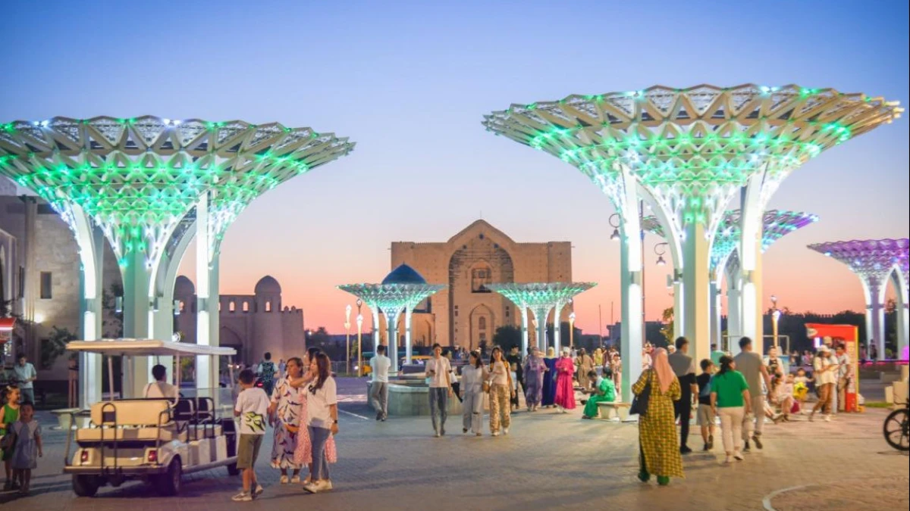
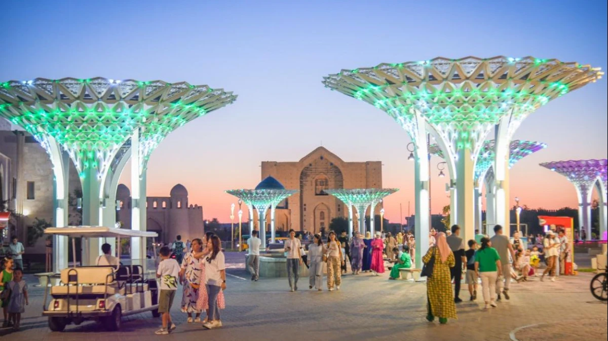

Түркістанды аралау
Түркістанның ұлылығын ашыңыз: Тарих пен сұлулыққа бой алдырыңыз
Онда не көрмедік?
Сіз жергілікті тұрғындардың бірегей мәдени дәстүрлерін зерттей аласыз, көріңіз дәстүрлі қазақ тағамдары, жергілікті қолөнер бұйымдарымен танысыңыз немесе қонаққа барыңыз осы аймақтың тарихы мен өнерін көрсететін қызықты мұражайлар мен галереялар. Сондай-ақ табиғи көрікті жерлерге, мысалы, қорықтарға назар аударған жөн Түркістанның флорасы мен фаунасының алуан түрлілігін көру үшін саябақтар. Тағы бір қызықты мүмкіндік - жергілікті өнер көрмелеріне бару немесе фестивальдер, онда сіз жергілікті суретшілердің, қолөнершілер мен музыканттардың жұмыстарын тамашалай аласыз. Сондай-ақ түсіну үшін жергілікті мешіттерге, храмдарға немесе храмдарға экскурсия жасай аласыз бұл жерлердің жергілікті халық үшін діни және мәдени маңызы.
 


Қожа Ахмет Яссауи кесенесі

url
culturemap.kzҚожа Ахмет Яссауи кесенесі – сәулеттің көрнекті ескерткіші, ортағасырлық сәулет өнерінің жарқын үлгісі.
Яссауи кесенесі масштабы бойынша орасан зәулім порталды-күмбезді ғимарат болып табылады. Оның енң – 46,5 м, ұзындығы – 65,5 м. Кесене қазандық бұрыштарынан таралатын және орын-жайды 8 бөлікке бөлетін өткелдер, баспалдақтар және дәліздермен байланыстырылған 35 орын-жайдан тұрады. Құрылыс алебастр ерітіндісі негізіндегі күйдірілген кірпіштен қаланған. Ғимараттың оң жақ порталы екі биік мұнарадан және аркадан тұрады, айтарлықтай биіктігінің (39 м) және арканың үлкен өткелінің (18 м) арқасында ол негізгі ғимараттың көлемінен ерекшеленіп, оның сәулеттік бейнесінің алыптығын айқындай түседі.
Керуен-сарай

url
kaz.nur.kz10 сәуір күні Түркістан қаласында "Керуен-сарай" көпфункционалды туристік кешені ашылған болатын. Құрылысы 2019 жылы желтоқсанда басталған кешен әлі де жұмысына толық кіріскен жоқ. Дегенмен қазіргі күннің өзінде жекелеген нысандары қонақтарды күтуге әзір.
"Керуен-сарай" кешенінің орналасқан жері - "Әзірет Сұлтан" мәдени қорығының буферлік аймағындағы 20,5 га аумақта, Қожа Ахмет Яссауи кесенесіне қарама-қарсы.
Гауhар ана кесенесі
url
qazir.kzГауhар ана кесенесі (ХІІ-ХІV ғғ.) Түркістан қаласынан оңтүстікке қарай 4 шақырым жерде, Түркістан – Шәуілдір автокөлік жолынан солға қарай 400-500 метр қашықтықта орналасқан.
Гауһар ана – ұлы ақын, ойшыл Қожа Ахмет Ясауидің қызы. Гауһар ана жайлы аңыз-әңгімелерге сүйенсек, ол емшілік қасиеті ерекше жан болған деседі. Әлі күнге дейін ана кесенесінің маңында емдік қасиеттері бар артезиан суы шығатын құдықтар көптеп кездеседі. Деректерде анамыздың ақылы көркіне сай ерекше жан болғандығы айтылады. Қазіргі заманғы кесене ғимараты — 2015 жылы салынған. Күйдірілген кірпіштен салынған. Кесененің биіктігі 9 м, жоспар бойынша ғимарат порталдық шаршы дүңгіршек болып табылады.
Күлтөбе
url
kultobe.comКүлтөбе – Қазақстан РеспубликасыныңТүркістан қаласында орналасқан ежелгі бекіністі қоныс және археологиялық ескерткіш. Нысан – ЮНЕСКО-ның Дүниежүзілік мұра тізіміне енген ескерткіш – Түркістан қаласының шығысындағы Қожа Ахмет Ясауи кесенесі буферлік оңтүстік аймағында, 480 м жерде орналасқан.
Күлтөбе қалажұртын қазу кезінде көптеген қызықты заттар: алтын, темір және қола бұйымдар, керамика, тиындар, органика, тандыр пештері бар үй-жайлар, көптеген ыдыс сынықтары табылды. Бұл Күлтөбеде осы тақтайшаларды шығаратын шеберханалардың болғандығын көрсетеді.
Рабия Сұлтан Бегім кесенесі
url
azretsultan.kzҚожа Ахмет Ясауи кесенесінің оңтүстік-шығыс бетінде 60 метр қашықтықта орналасқан. Рабия Сұлтан Бегім Темірдің ұрпағы, атақты астроном ғалым Ұлықбектің қызы. Арнайы салынған кесенеде өзі, ұлы және үш немересімен қоса жерленген. Оның құлпытасында: «Бұл құдіретті Әмір-Темір Көрегеннің ұлы, азапты ажалдан қаза тапқан, құдіретті ұлы сұлтан Ұлықбек көрегеннің қызы, ақсүйек, Құдай кешіріп, рақымшылық жасаған, ізгі жанды Рабия Сұлтан бегімнің тыныштық тауып жатқан жері» деген сөздер жазылған.
Биіктігі 20,6 метр, қасбетінің жалпы ені 11 метр. Кесененің аркасы 6 метр, айнала орналасқан қырларының арақашықтығы 3,5метр. Орталық бөлігі цилиндр тәрізді биік барабанға орнатылған күмбезбен жабылған.
Түркістан: ғасырлар сиқыры және тарихтың көркі.
Сізді әр тасы ғасырлар тарихымен сыр шертетін, әр бұрышы мәдениет тынысына айналған Түркістан әлеміне шақырамыз. Түркістанмен бірге өткеннің жұмбақ лабиринттері мен бүгінгінің байлығын ашыңыз.